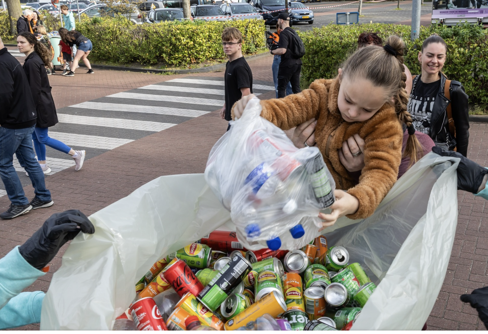

Hoe een brommer alles in gang zette…
Jaren negentig werd Mario, het neefje van Ruud Sliphorst ernstig ziek. De vooruitzichten waren slecht: zijn 16e verjaardag zou hij niet gaan halen. Stoer rondscheuren op een brommer: het zou er nooit van komen. Om de hartenwens van Mario toch in vervulling te laten gaan, regelde zijn familie een ritje op een stoere brommer. Ruud mocht bij hem achterop. De politie van het dorp was ingelicht en kneep die middag een oogje dicht. Het intense plezier van Mario en zijn stralende lach maakten een onuitwisbare indruk op Ruud. Zo veel plezier gunde hij alle zieke kinderen.
Lees het hele verhaal